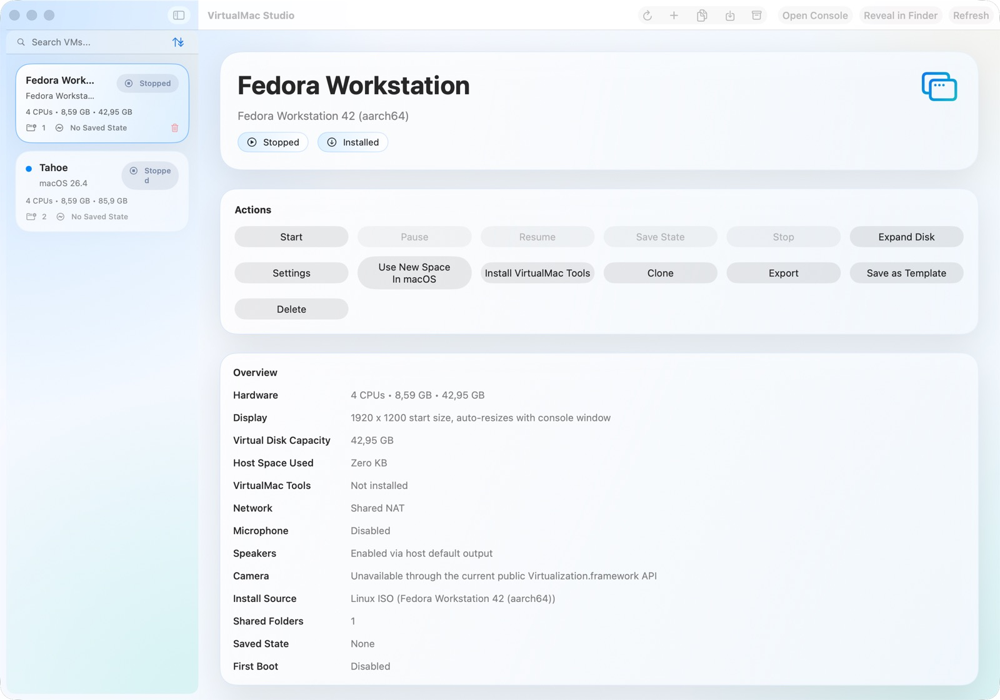

SAB VM Lab is designed to feel like a serious native Mac app, not a thin shell around a VM engine. The screenshots below show the current product direction across VM management, guided setup, Linux guest support, and flexible storage growth.
- Guided create flows for both macOS and Linux guests
- Normal Mac-style management views for hardware, disks, networking, clipboard, and tools
- Expandable virtual storage so you can start smaller and grow later
